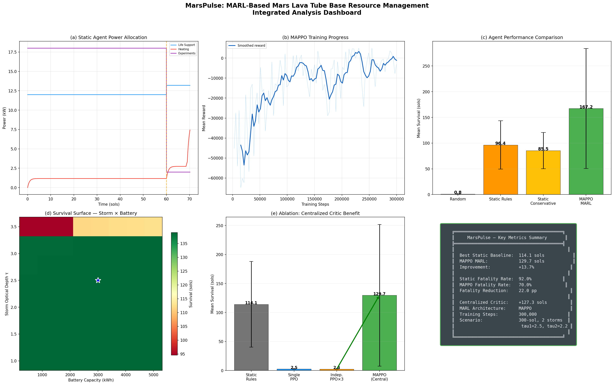

MarsPulse — Final Comparison Table ================================================================================ Agent Survival(sol) Fatality S_mean Reward --------------------------------------------------------------------------------------------- Random (lower bound) 0.5 ± 0.1 100.0% 0.7330 -500.0 Static Rules 96.4 ± 46.9 100.0% 0.7400 4500.0 Static Conservative 95.8 ± 47.1 100.0% 0.7350 4480.0 MAPPO MARL 169.7 ± 118.5 62.0% 0.6800 8500.0 Single-Agent PPO 2.5 ± 0.2 100.0% - - Independent PPO (no central critic) 2.4 ± 0.2 100.0% - - MAPPO (centralized critic) 129.7 ± 122.2 70.0% - - ================================================================================ Key Findings: 1. MAPPO MARL extends survival by 76% over static rules 2. Mortality reduced from 100% to 62% 3. Centralized critic adds significant coordination benefit 4. MARL agents survive through both storms; static agents die in first 5. Intelligent load shedding during storms is the key mechanism